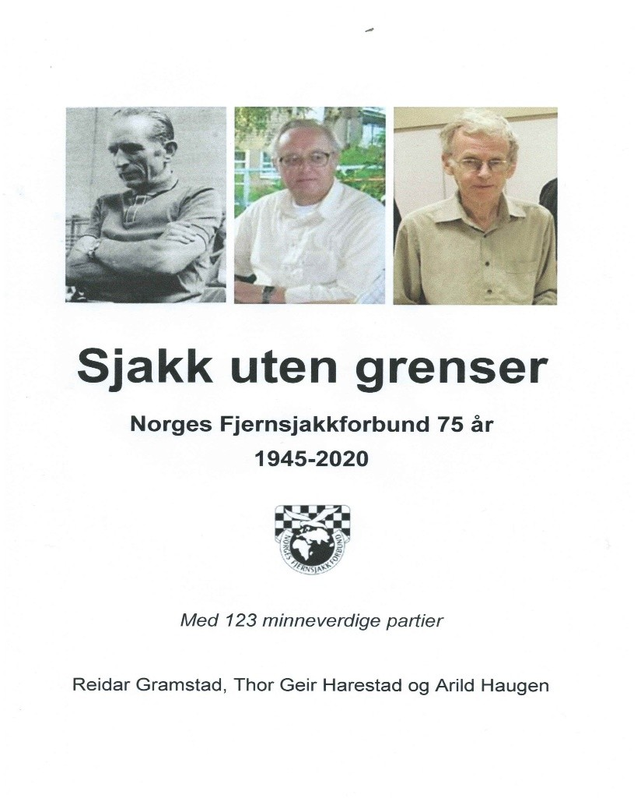

♔ Correspondence Chess
ICCF tournaments, games and analytical experience from decades of play and study.
Enter Correspondence ChessChess • Music • Family History
Welcome to Ramiras, a personal website bringing together correspondence chess, Norwegian chess history, music, family heritage and personal memories collected over a lifetime.
The site contains selected games, articles, photographs, genealogical research, historical material and information about the book Chess Without Borders.
ICCF tournaments, games and analytical experience from decades of play and study.
Enter Correspondence ChessNorsk sjakkhistorie, turneringer, partier, analyser, artikler og historiske tilbakeblikk.
Enter SjakkFavourite recordings, musicians, concerts and musical interests collected over many years.
Enter MusicBooks, movies, reviews, memories and other personal interests.
Enter Hot StuffFamiliehistorie, slektsforskning, fotografier, dokumenter og historier fra Haugen- og Hiim-slektene.
Open Chronicle
Sjakk uten grenserSjakk uten grenser<